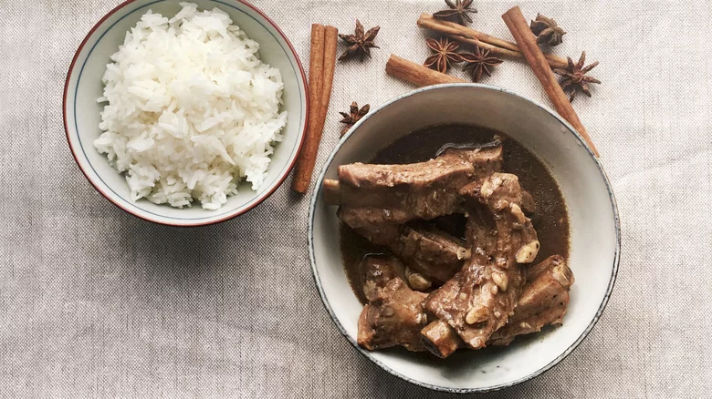

Bak Kut Teh Recipe
Back to main

Ingredients list:
- 8 cups water
- 2 tablespoons ground white pepper
- 1 tablespoon ground black pepper
- 2 teaspoons garlic powder
- 1 teaspoon salt
- 3 whole star anise
- 1 teaspoon ground cinnamon
- 20 garlic cloves
- 6 teaspoons dark soy sauce
- 2 pounds pork ribs, rinsed and drained, cut into 4 pieces
- Cooked rice, for serving
| Preparation time |
Cooking time |
Serving size |
20 minutes |
1 hour 30 minutes |
2 servings |
Instructions:
- In a large pot, add all the ingredients, except the pork ribs, and bring to a boil over high heat.
-
Add the pork ribs to the broth and bring back to a boil, then lower the heat and let it simmer on low for 1 hour and 15 minutes, or until
the pork is tender.
- Turn off the heat and cover for 10 minutes. Serve hot with rice.